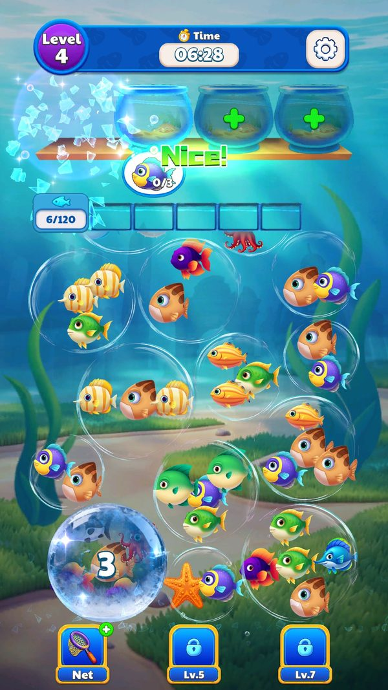
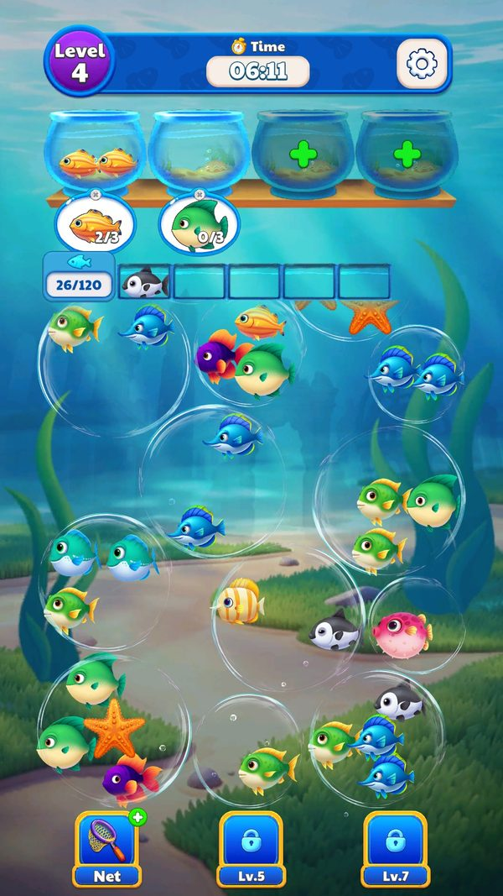
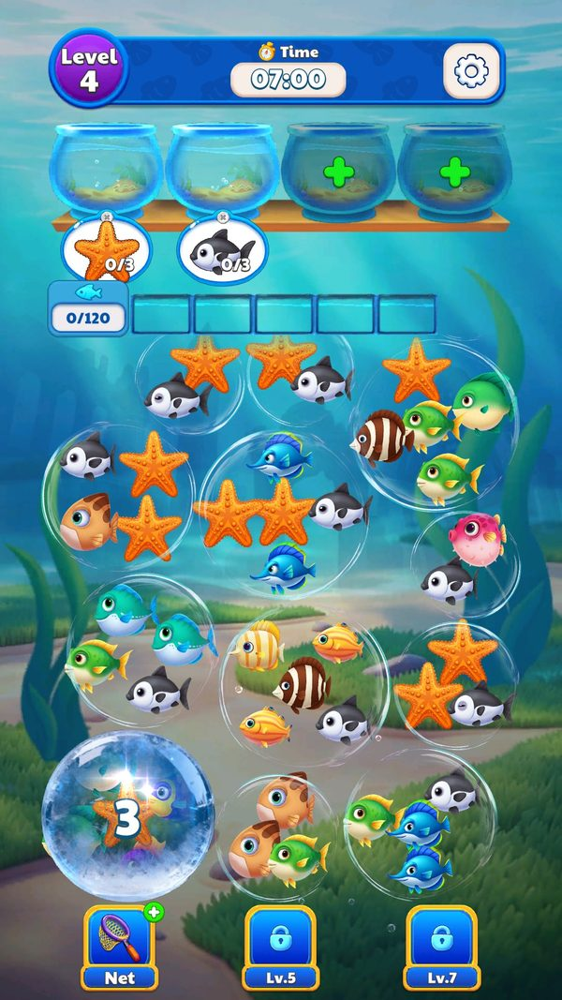

Cơ chế chơi trong màn
Đây là vòng chơi lõi.
Mô tả
- Đây là vòng chơi lõi.
- Màn chơi gồm ba tầng: các bong bóng (BubbleItem) treo phía trên chứa cá, hàng ô chờ tạm (TempItem) ở giữa, và các bể đích (TargetItem) ở dưới.
- Mỗi bong bóng chứa một danh sách cá xác định bởi FishStr trong BubbleConfig; mỗi bể đích cần đủ số cá cùng loại (NeedFishCount) thì tự đóng và được thay bằng bể mới.
- Người chơi bấm vào một con cá, cá bay xuống bể đích phù hợp nếu có, nếu không thì nằm lại ô chờ tạm.
- Chạm cá và ghép thẳng vào bể đích: Cá vào bể; nếu đủ thì bể phát hiệu ứng PlayVfxEnterWater, được thu hồi và bể mới xuất hiện
- Cá không ghép được nên vào ô chờ tạm: Cá nằm ở hàng chờ, đợi bể đích phù hợp mở ra
- Cá từ ô chờ tự xuống bể khi bể phù hợp mở: Hàng chờ được giải phóng, giảm nguy cơ thua
- Thua do đầy ô chờ: UIPanelFail mở, mất 1 mạng
- Thua do hết thời gian: Mất 1 mạng, có thể hồi sinh
- Mở khoá bể đích bị khoá: Thêm một bể nhận cá, giảm áp lực hàng chờ
- Bể đích đếm ngược xuất hiện giữa màn: Tạo áp lực thời gian cục bộ bên trong màn
- Bong bóng rơi xuống để lộ cá bên trong: Người chơi thấy loại cá để lên kế hoạch
Lưu ý
Ảnh chụp màn hình (5)
Chụp trực tiếp từ game đang chạy: 2026-10-06 · LDPlayer 9 · Android 9 · 1080×1920 · máy ảo PHM110 · v1.4111 (cài từ Google Play ngày 12/09/2026) · tài khoản test JadeGill, đang ở level 4. Bấm ảnh để phóng to, dùng phím ← → để chuyển ảnh.








Mở khóa & điểm vào
Mở ngay từ level 1. Các cơ chế phụ mở dần theo PlayConfig.StartLevel1/2/3 tương ứng ba nhánh biến thể level.
Điểm vào:
- UIPanelHome, bấm nút chơi, nạp scene AssetRes/Scenes/GameLevel.unity
- Chơi lại sau khi thua từ UIPanelFail
- Tiếp tục sau khi hồi sinh từ UIPanelRevive
Cách hoạt động
- UIPanelLevel.OnShow nhận LevelID, đọc dòng tương ứng trong LevelConfig để lấy BubbleDataStr, LevelTime, LevelDifficulty, PointRangeStr, CountdownTargetProgress, IsFishRay và BranchObstacle.
- BubbleDataStr trỏ tới một file BubbleConfig_<n>.json trong AssetRes/Configs/Custom chứa mảng bong bóng.
- Mỗi phần tử có BubbleID, BubbleType (sức chứa) và FishStr (danh sách loại cá, ví dụ 1,1,1), kèm các cờ cơ chế: IsFrozen, IsUnknown, LockCount, Lock2Count, IsKey, UnKnowFishStr, IsObstacle, Obstacle2Count, IsMore, BindFishStr, IceFishStr, MaskTargetFish, KeyFishStr, LockFishStr, IsConveyor và IsCollection.
- BubbleItem.OnInit(BubbleConfig, int) dựng bong bóng theo cấu hình đó và nạp sprite cá theo mẫu tên fish_{0}.
- Khi người chơi chạm, FishItem.OnPointerDown rồi OnHandleClick chạy: nếu có bể đích đang mở nhận đúng loại cá thì cá đi thẳng xuống (IsMoveToTarget), nếu không thì vào ô chờ (IsMoveToTemp) và ArrangeTempMahjong sắp lại hàng chờ.
- TargetItem.CheckIsFull kiểm tra đủ cá chưa; đủ thì PlayVfxEnterWater rồi bể được thu hồi và bể kế tiếp mở ra.
- Bong bóng rỗng sẽ TryRelease.
- Khi tất cả bể đích hoàn tất, màn thắng và UIPanelWin mở.
- Nếu hết thời gian hoặc hết ô chờ, UIPanelFail mở.
Luồng chi tiết theo code
UIPanelLevel.OnShow nhận LevelID, đọc dòng tương ứng trong LevelConfig để lấy BubbleDataStr, LevelTime, LevelDifficulty, PointRangeStr, CountdownTargetProgress, IsFishRay và BranchObstacle. BubbleDataStr trỏ tới một file BubbleConfig_<n>.json trong AssetRes/Configs/Custom chứa mảng bong bóng. Mỗi phần tử có BubbleID, BubbleType (sức chứa) và FishStr (danh sách loại cá, ví dụ 1,1,1), kèm các cờ cơ chế: IsFrozen, IsUnknown, LockCount, Lock2Count, IsKey, UnKnowFishStr, IsObstacle, Obstacle2Count, IsMore, BindFishStr, IceFishStr, MaskTargetFish, KeyFishStr, LockFishStr, IsConveyor và IsCollection. BubbleItem.OnInit(BubbleConfig, int) dựng bong bóng theo cấu hình đó và nạp sprite cá theo mẫu tên fish_{0}. Khi người chơi chạm, FishItem.OnPointerDown rồi OnHandleClick chạy: nếu có bể đích đang mở nhận đúng loại cá thì cá đi thẳng xuống (IsMoveToTarget), nếu không thì vào ô chờ (IsMoveToTemp) và ArrangeTempMahjong sắp lại hàng chờ. TargetItem.CheckIsFull kiểm tra đủ cá chưa; đủ thì PlayVfxEnterWater rồi bể được thu hồi và bể kế tiếp mở ra. Bong bóng rỗng sẽ TryRelease. Khi tất cả bể đích hoàn tất, màn thắng và UIPanelWin mở. Nếu hết thời gian hoặc hết ô chờ, UIPanelFail mở.
Số liệu chính
| Chỉ số | Giá trị | Nguồn |
|---|---|---|
| BubbleConfig.BubbleID / BubbleType / FishStr | ví dụ BubbleID 1, BubbleType 3, FishStr "1,1,1" | AssetRes/Configs/Custom/BubbleConfig_<level>.json |
| BubbleConfig cờ cơ chế | IsFrozen, IsUnknown, LockCount, Lock2Count, IsKey, UnKnowFishStr, IsObstacle, Obstacle2Count, IsMore, BindFishStr, IceFishStr, MaskTargetFish, KeyFishStr, LockFishStr, IsConveyor, IsCollection | BubbleConfig, 25 field, xem features/BubbleConfig.md |
| LevelConfig.LevelTime | 240 ở 642 màn, 300 ở 326 màn, 180 ở 324 màn, 360 đến 600 ở 8 màn | AssetRes/Configs/Custom/LevelConfig.json |
| LevelConfig.PointRangeStr | ví dụ 0.35,0.5|0.55,0.8 | LevelConfig.json, phân giải thành _listPointRange |
| LevelConfig.LevelDifficulty | 1 ở 327 màn, 2 ở 650 màn, 3 ở 323 màn | LevelConfig.json |
| LevelConfig.IsFishRay / BranchObstacle | chỉ có trong bộ biến thể LevelConfig6 | LevelConfig6.json, 350 màn từ level 201 đến 900 |
| LevelDifficultyConfig | Difficulty nhân LevelProgress nhân TempCount cho ra Order1 đến Order5 | AssetRes/Configs/Default/LevelDifficultyConfig.json |
Use case (8)
Bấm vào từng use case để mở. Mở/đóng tất cả
UC-01 Chạm cá và ghép thẳng vào bể đích
Các bước- FishItem.OnPointerDown ghi nhận chạm
- OnHandleClick tìm TargetItem phù hợp
- Cá bay xuống, IsMoveToTarget bằng true
- TargetItem.UpdateTxtNum cập nhật số đếm
- CheckIsFull kiểm tra đã đủ NeedFishCount chưa
| Actor | Player |
|---|---|
| Trigger | Chạm một con cá lộ mặt trong bong bóng |
| Điều kiện | Có bể đích đang mở nhận đúng loại cá và chưa đầy |
| Kết quả | Cá vào bể; nếu đủ thì bể phát hiệu ứng PlayVfxEnterWater, được thu hồi và bể mới xuất hiện |
| Quy tắc / số liệu | Số cá cần cho một bể lấy từ NeedFishCount; loại cá xác định bởi FishStr |
| Evidence | FishItem.OnHandleClick; FishItem.get_IsMoveToTarget; TargetItem.CheckIsFull; TargetItem.PlayVfxEnterWater |
UC-02 Cá không ghép được nên vào ô chờ tạm
Các bước- OnHandleClick không tìm được bể
- Cá bay vào TempItem trống, IsMoveToTemp bằng true
- ArrangeTempMahjong sắp lại thứ tự hàng chờ
| Actor | Player |
|---|---|
| Trigger | Chạm cá khi không có bể đích phù hợp |
| Điều kiện | Còn ít nhất một ô chờ trống |
| Kết quả | Cá nằm ở hàng chờ, đợi bể đích phù hợp mở ra |
| Quy tắc / số liệu | Số ô chờ do TempCount trong LevelDifficultyConfig quyết định, giá trị từ 0 đến 4 |
| Evidence | FishItem.get_IsMoveToTemp; FishItem.ArrangeTempMahjong; LevelDifficultyConfig.TempCount |
UC-03 Cá từ ô chờ tự xuống bể khi bể phù hợp mở
Các bước- TargetItem mới được tạo và UpdateFishSprite
- Hệ thống quét hàng chờ
- FishItem.TempToOutside đưa cá ra khỏi ô chờ
- Cá bay xuống bể mới
| Actor | System |
|---|---|
| Trigger | Một bể đích mới xuất hiện |
| Điều kiện | Hàng chờ có cá cùng loại với bể mới |
| Kết quả | Hàng chờ được giải phóng, giảm nguy cơ thua |
| Quy tắc / số liệu | Tự động, không tốn thao tác của người chơi |
| Evidence | FishItem.TempToOutside; TargetItem.UpdateFishSprite |
UC-04 Thua do đầy ô chờ
Các bước- OnHandleClick không tìm được bể và không còn ô trống
- Hiện cảnh báo 位置不够
- Màn kết thúc thất bại
| Actor | System |
|---|---|
| Trigger | Chạm cá khi hàng chờ đã đầy và không ghép được |
| Điều kiện | Mọi TempItem đều có cá |
| Kết quả | UIPanelFail mở, mất 1 mạng |
| Quy tắc / số liệu | Đây là điều kiện thua chính, bên cạnh hết thời gian |
| Evidence | Chuỗi 位置不够 trong BubbleItem; UIPanelFail |
UC-05 Thua do hết thời gian
Các bước- TimerManager đếm LevelTime
- Hết giờ thì khoá thao tác
- UIPanelFail mở
| Actor | System |
|---|---|
| Trigger | Đồng hồ đếm ngược về 0 |
| Điều kiện | Chưa hoàn tất mọi bể đích |
| Kết quả | Mất 1 mạng, có thể hồi sinh |
| Quy tắc / số liệu | LevelTime theo từng màn: 240 giây ở 642 màn, 300 giây ở 326 màn, 180 giây ở 324 màn, cá biệt 360 đến 600 giây ở 8 màn |
| Evidence | LevelConfig.LevelTime; TimerManager |
UC-06 Mở khoá bể đích bị khoá
Các bước- TargetItem.OnHandleClick
- UnlockTarget chạy hiệu ứng mở
- Bể bắt đầu nhận cá
| Actor | Player |
|---|---|
| Trigger | Bấm vào bể đích chưa mở |
| Điều kiện | Bể ở trạng thái IsUnLock bằng false |
| Kết quả | Thêm một bể nhận cá, giảm áp lực hàng chờ |
| Quy tắc / số liệu | Bể khoá là một phần thiết kế độ khó của từng màn |
| Evidence | TargetItem.UnlockTarget; TargetItem.get_IsUnLock |
UC-07 Bể đích đếm ngược xuất hiện giữa màn
Các bước- Khi tiến độ đạt mốc, sinh bể đích có đồng hồ
- IsCountdown bằng true và CountdownTimer chạy
- Không hoàn thành kịp thì RecycleCountdownTarget thu hồi
| Actor | System |
|---|---|
| Trigger | Tiến độ màn đạt mốc trong CountdownTargetProgress |
| Điều kiện | Màn có cấu hình CountdownTargetProgress khác rỗng |
| Kết quả | Tạo áp lực thời gian cục bộ bên trong màn |
| Quy tắc / số liệu | Định dạng mốc,giây ngăn cách bởi dấu sổ đứng. Ví dụ level 29 là 0.1,30|0.3,60|0.55,90 nghĩa là ở tiến độ 10 phần trăm sinh bể 30 giây, 30 phần trăm sinh bể 60 giây, 55 phần trăm sinh bể 90 giây. Có 147 trong 1300 màn dùng cơ chế này |
| Evidence | LevelConfig.CountdownTargetProgress; TargetItem.get_IsCountdown; TargetItem.RecycleCountdownTarget |
UC-08 Bong bóng rơi xuống để lộ cá bên trong
Các bước- Bong bóng phía trên rơi xuống vị trí thấp hơn
- Nội dung cá được hiển thị
| Actor | System |
|---|---|
| Trigger | Bong bóng phía dưới được giải phóng |
| Điều kiện | Bong bóng ở trạng thái chưa lộ nội dung |
| Kết quả | Người chơi thấy loại cá để lên kế hoạch |
| Quy tắc / số liệu | Gợi ý trong game: 泡泡掉落到底部就可以看清里面的鱼了 |
| Evidence | Chuỗi hướng dẫn trong BubbleItem; BubbleItem.GetAdjacentBubble |
Cấu hình (11)
Gộp mọi nguồn: const trong code, JSON mặc định trong Resources, bảng static, storage key, AB test, cờ server.
| Nguồn | Key | Kiểu | Giá trị | Ý nghĩa | Nơi định nghĩa |
|---|---|---|---|---|---|
| config class | BubbleConfig.BubbleID / BubbleType / FishStr | int/int/string | ví dụ BubbleID 1, BubbleType 3, FishStr "1,1,1" | Id bong bóng, sức chứa, danh sách loại cá bên trong | AssetRes/Configs/Custom/BubbleConfig_<level>.json |
| config class | BubbleConfig cờ cơ chế | bool/int/string | IsFrozen, IsUnknown, LockCount, Lock2Count, IsKey, UnKnowFishStr, IsObstacle, Obstacle2Count, IsMore, BindFishStr, IceFishStr, MaskTargetFish, KeyFishStr, LockFishStr, IsConveyor, IsCollection | Bật từng cơ chế phụ trên một bong bóng cụ thể | BubbleConfig, 25 field, xem features/BubbleConfig.md |
| config class | LevelConfig.LevelTime | float | 240 ở 642 màn, 300 ở 326 màn, 180 ở 324 màn, 360 đến 600 ở 8 màn | Giới hạn thời gian mỗi màn, đơn vị giây | AssetRes/Configs/Custom/LevelConfig.json |
| config class | LevelConfig.PointRangeStr | string | ví dụ 0.35,0.5|0.55,0.8 | Các khoảng tiến độ dùng để rải sự kiện trong màn, 1298 trên 1300 màn có giá trị | LevelConfig.json, phân giải thành _listPointRange |
| config class | LevelConfig.LevelDifficulty | int | 1 ở 327 màn, 2 ở 650 màn, 3 ở 323 màn | Chọn nhóm dòng trong LevelDifficultyConfig | LevelConfig.json |
| config class | LevelConfig.IsFishRay / BranchObstacle | bool/string | chỉ có trong bộ biến thể LevelConfig6 | Bật tia cá và chướng ngại cành cây | LevelConfig6.json, 350 màn từ level 201 đến 900 |
| json default | LevelDifficultyConfig | bảng 60 dòng | Difficulty nhân LevelProgress nhân TempCount cho ra Order1 đến Order5 | Với từng độ khó và mốc tiến độ, xác suất sinh số lượng đơn hàng; TempCount từ 0 đến 4 là số ô chờ | AssetRes/Configs/Default/LevelDifficultyConfig.json |
| runtime LDPlayer 06/10/2026 | Bể đích và ô chờ | rule | 2 bể mở + 2 bể khoá (dấu +), 5 ô chờ | Bố cục màn level 4 | ảnh chụp screenshots/level4_start.jpg |
| runtime LDPlayer 06/10/2026 | Đồng hồ màn | rule | Đứng ở 07:00 tới lần chạm đầu, dừng khi mở menu bánh răng hoặc popup booster | Thời gian chỉ tính khi đang thao tác | ảnh chụp screenshots/level4_start.jpg |
| runtime LDPlayer 06/10/2026 | Level 4 trên máy | observed | 420 giây, 120 cá, 33 bong bóng = LevelConfig2 / BubbleConfig_4_2 | Thiết bị đang ở nhánh A/B LevelConfig2 | Configs/Custom/BubbleConfig_4_2.json |
| runtime LDPlayer 06/10/2026 | Bộ loài cá khi chơi lại | observed | Đổi giữa hai lần chơi cùng màn (lần 1 cá cam sọc + cá xanh tím, lần 2 sao biển + cá trắng đen) | Id cá trong FishStr có thể được ánh xạ lại lúc chạy (suy luận) | ảnh chụp screenshots/level4_retry_new_fish.jpg |
Bảng config gốc trong APK
BubbleConfig_4_2.json – layout level 4 đang chạy trên máy
33 bong bóng, 120 cá. FishStr là danh sách id cá theo lớp trong bong bóng; ảnh cá lấy từ sprite fish_<id>. AssetRes/Configs/Custom/BubbleConfig_4_2.json · 33 dòng.
| BubbleID | BubbleType | FishStr | IsFrozen | IsUnknown | LockCount | IsKey |
|---|---|---|---|---|---|---|
| 1 | 5 |     120,25,26,2,2 120,25,26,2,2 | ✔ | 0 | ||
| 2 | 2 |  55,55 55,55 | 0 | |||
| 3 | 2 |  120,27 120,27 | 0 | |||
| 4 | 2 | 120,27 | 0 | |||
| 5 | 3 | 26,26,2 | 0 | |||
| 6 | 4 |  27,97,55,55 27,97,55,55 | 0 | |||
| 7 | 3 | 120,120,27 | 0 | |||
| 8 | 4 | 2,120,120,27 | 0 | |||
| 9 | 5 |    30,124,27,32,124 30,124,27,32,124 | 0 | |||
| 10 | 4 |  31,27,120,120 31,27,120,120 | 0 | |||
| 11 | 3 | 31,31,97 | 0 | |||
| 12 | 2 |  53,27 53,27 | 0 | |||
| 13 | 5 | 120,120,55,55,27 | 0 | |||
| 14 | 4 |  87,87,97,27 87,87,97,27 | 0 | |||
| 15 | 5 | 97,97,30,2,120 | 0 | |||
| 16 | 5 | 25,25,97,30,55 | 0 | |||
| 17 | 4 | 32,32,32,27 | 0 | |||
| 18 | 2 | 25,27 | 0 | |||
| 19 | 3 | 27,27,27 | 0 | |||
| 20 | 5 | 27,27,124,2,97 | ✔ | 0 | ||
| 21 | 5 |  31,31,25,32,13 31,31,25,32,13 | 0 | |||
| 22 | 5 |  120,2,31,55,28 120,2,31,55,28 | 0 | |||
| 23 | 3 | 97,13,31 | 0 | |||
| 24 | 3 | 53,27,120 | 0 | |||
| 25 | 5 | 27,27,27,31,32 | 0 | |||
| 26 | 3 | 27,2,55 | 0 | |||
| 27 | 2 | 120,26 | 0 | |||
| 28 | 3 | 2,2,28 | 0 | |||
| 29 | 4 | 55,120,2,28 | 0 | |||
| 30 | 4 | 120,120,87,26 | 0 | |||
| 31 | 4 | 25,31,26,13 | 0 | |||
| 32 | 3 | 97,27,55 | 0 | |||
| 33 | 4 | 55,53,27,2 | 0 |
LevelConfig2.json – 30 màn đầu của nhánh A/B đang chạy
Bản ghi đè 208 màn. Level 4 ở đây là 420 giây, khớp đồng hồ 07:00 đo trên máy. AssetRes/Configs/Custom/LevelConfig2.json · 30/208 dòng.
| LevelID | BubbleDataStr | LevelTime | PointRangeStr | NoAdWeight | OneAdWeight | TwoAdWeight | ThreeAdWeight | LevelDifficulty | CountdownTargetProgress |
|---|---|---|---|---|---|---|---|---|---|
| 3 | BubbleConfig_3_2 | 360.0 | 0.4,0.7 | 0.5 | 0.35 | 0.15 | 0.0 | 1 | |
| 4 | BubbleConfig_4_2 | 420.0 | 0.45,0.75 | 0.4 | 0.35 | 0.25 | 0.0 | 2 | |
| 5 | BubbleConfig_5_2 | 300.0 | 0.4,0.75 | 0.35 | 0.3 | 0.35 | 0.0 | 2 | |
| 6 | BubbleConfig_6_2 | 240.0 | 0.45,0.75 | 0.35 | 0.25 | 0.4 | 0.0 | 2 | |
| 7 | BubbleConfig_7_2 | 480.0 | 0.44,0.57|0.58,0.8 | 0.3 | 0.15 | 0.3 | 0.25 | 3 | |
| 8 | BubbleConfig_8_2 | 360.0 | 0.45,0.75 | 0.45 | 0.35 | 0.2 | 0.0 | 1 | |
| 9 | BubbleConfig_9_2 | 240.0 | 0.35,0.5|0.55,0.8 | 0.35 | 0.25 | 0.25 | 0.15 | 2 | |
| 10 | BubbleConfig_10_2 | 300.0 | 0.4,0.55|0.56,0.8 | 0.35 | 0.25 | 0.25 | 0.15 | 2 | |
| 11 | BubbleConfig_11_2 | 300.0 | 0.45,0.75 | 0.45 | 0.35 | 0.2 | 0.0 | 1 | |
| 12 | BubbleConfig_12_2 | 420.0 | 0.28,0.43|0.44,0.57|0.58,0.8 | 0.3 | 0.15 | 0.2 | 0.25 | 3 | |
| 13 | BubbleConfig_13_2 | 180.0 | 0.45,0.75 | 0.45 | 0.35 | 0.2 | 0.0 | 1 | |
| 14 | BubbleConfig_14_2 | 360.0 | 0.35,0.5|0.55,0.8 | 0.35 | 0.25 | 0.25 | 0.15 | 2 | |
| 15 | BubbleConfig_15_2 | 300.0 | 0.4,0.55|0.56,0.8 | 0.35 | 0.25 | 0.25 | 0.15 | 2 | |
| 16 | BubbleConfig_16_2 | 300.0 | 0.28,0.43|0.44,0.57|0.58,0.8 | 0.3 | 0.15 | 0.3 | 0.25 | 3 | |
| 17 | BubbleConfig_17_2 | 180.0 | 0.45,0.75 | 0.45 | 0.35 | 0.2 | 0.0 | 1 | |
| 18 | BubbleConfig_18_2 | 360.0 | 0.35,0.5|0.55,0.8 | 0.25 | 0.25 | 0.25 | 0.25 | 2 | |
| 19 | BubbleConfig_19_2 | 300.0 | 0.4,0.55|0.56,0.8 | 0.25 | 0.25 | 0.25 | 0.25 | 2 | |
| 20 | BubbleConfig_20_2 | 240.0 | 0.28,0.43|0.44,0.57|0.58,0.8 | 0.2 | 0.15 | 0.3 | 0.35 | 3 | 0.1,30|0.3,60|0.5,90 |
| 21 | BubbleConfig_21_2 | 300.0 | 0.4,0.55|0.56,0.8 | 0.25 | 0.25 | 0.25 | 0.25 | 2 | 0.2,30|0.5,60 |
| 22 | BubbleConfig_22_2 | 180.0 | 0.45,0.75 | 0.35 | 0.35 | 0.3 | 0.0 | 1 | |
| 23 | BubbleConfig_23_2 | 240.0 | 0.35,0.5|0.55,0.8 | 0.25 | 0.25 | 0.25 | 0.25 | 2 | 0.2,30|0.55,60 |
| 24 | BubbleConfig_24_2 | 240.0 | 0.4,0.55|0.56,0.8 | 0.25 | 0.25 | 0.25 | 0.25 | 2 | |
| 25 | BubbleConfig_25_2 | 300.0 | 0.28,0.43|0.44,0.57|0.58,0.8 | 0.2 | 0.15 | 0.3 | 0.35 | 3 | 0.1,30|0.3,60|0.5,90 |
| 26 | BubbleConfig_26_2 | 180.0 | 0.45,0.75 | 0.35 | 0.35 | 0.3 | 0.0 | 1 | |
| 27 | BubbleConfig_27_2 | 240.0 | 0.35,0.5|0.55,0.8 | 0.25 | 0.25 | 0.25 | 0.25 | 2 | |
| 28 | BubbleConfig_28_2 | 240.0 | 0.4,0.55|0.56,0.8 | 0.25 | 0.25 | 0.25 | 0.25 | 2 | |
| 29 | BubbleConfig_29_2 | 300.0 | 0.28,0.43|0.44,0.57|0.58,0.8 | 0.2 | 0.15 | 0.3 | 0.35 | 3 | 0.1,30|0.3,60|0.55,90 |
| 30 | BubbleConfig_30_2 | 240.0 | 0.4,0.55|0.56,0.8 | 0.25 | 0.25 | 0.25 | 0.25 | 2 | |
| 31 | BubbleConfig_31_2 | 180.0 | 0.45,0.75 | 0.35 | 0.35 | 0.3 | 0.0 | 1 | |
| 32 | BubbleConfig_32_2 | 240.0 | 0.4,0.55|0.56,0.8 | 0.15 | 0.25 | 0.25 | 0.35 | 2 | 0.2,60|0.5,90 |
LevelConfig.json – 30 màn đầu của bảng chính (30/1300 dòng)
1.300 màn. Level 4 ở bảng chính chỉ 360 giây, 99 cá. AssetRes/Configs/Custom/LevelConfig.json · 30/1300 dòng.
| LevelID | BubbleDataStr | LevelTime | PointRangeStr | NoAdWeight | OneAdWeight | TwoAdWeight | ThreeAdWeight | LevelDifficulty | CountdownTargetProgress |
|---|---|---|---|---|---|---|---|---|---|
| 1 | BubbleConfig_1 | 300.0 | 1.0 | 0.0 | 0.0 | 0.0 | 1 | ||
| 2 | BubbleConfig_2 | 300.0 | 1.0 | 0.0 | 0.0 | 0.0 | 1 | ||
| 3 | BubbleConfig_3 | 420.0 | 0.35,0.7 | 0.35 | 0.3 | 0.35 | 0.0 | 2 | |
| 4 | BubbleConfig_4 | 360.0 | 0.25,0.6 | 0.45 | 0.35 | 0.2 | 0.0 | 1 | |
| 5 | BubbleConfig_5 | 300.0 | 0.4,0.75 | 0.35 | 0.3 | 0.35 | 0.0 | 2 | |
| 6 | BubbleConfig_6 | 240.0 | 0.45,0.75 | 0.35 | 0.25 | 0.4 | 0.0 | 2 | |
| 7 | BubbleConfig_7 | 480.0 | 0.28,0.43|0.58,0.8 | 0.3 | 0.15 | 0.3 | 0.25 | 3 | |
| 8 | BubbleConfig_8 | 360.0 | 0.45,0.75 | 0.45 | 0.35 | 0.2 | 0.0 | 1 | |
| 9 | BubbleConfig_9 | 240.0 | 0.35,0.5|0.55,0.8 | 0.35 | 0.25 | 0.25 | 0.15 | 2 | |
| 10 | BubbleConfig_10 | 300.0 | 0.4,0.55|0.56,0.8 | 0.35 | 0.25 | 0.25 | 0.15 | 2 | |
| 11 | BubbleConfig_11 | 300.0 | 0.45,0.75 | 0.45 | 0.35 | 0.2 | 0.0 | 1 | |
| 12 | BubbleConfig_12 | 420.0 | 0.28,0.43|0.44,0.57|0.58,0.8 | 0.3 | 0.15 | 0.2 | 0.25 | 3 | |
| 13 | BubbleConfig_13 | 180.0 | 0.45,0.75 | 0.45 | 0.35 | 0.2 | 0.0 | 1 | |
| 14 | BubbleConfig_14 | 360.0 | 0.35,0.5|0.55,0.8 | 0.35 | 0.25 | 0.25 | 0.15 | 2 | |
| 15 | BubbleConfig_15 | 300.0 | 0.4,0.55|0.56,0.8 | 0.35 | 0.25 | 0.25 | 0.15 | 2 | |
| 16 | BubbleConfig_16 | 300.0 | 0.28,0.43|0.44,0.57|0.58,0.8 | 0.3 | 0.15 | 0.3 | 0.25 | 3 | |
| 17 | BubbleConfig_17 | 180.0 | 0.45,0.75 | 0.45 | 0.35 | 0.2 | 0.0 | 1 | |
| 18 | BubbleConfig_18 | 360.0 | 0.35,0.5|0.55,0.8 | 0.25 | 0.25 | 0.25 | 0.25 | 2 | |
| 19 | BubbleConfig_19 | 300.0 | 0.4,0.55|0.56,0.8 | 0.25 | 0.25 | 0.25 | 0.25 | 2 | |
| 20 | BubbleConfig_20 | 240.0 | 0.28,0.43|0.44,0.57|0.58,0.8 | 0.2 | 0.15 | 0.3 | 0.35 | 3 | |
| 21 | BubbleConfig_21 | 300.0 | 0.4,0.55|0.56,0.8 | 0.25 | 0.25 | 0.25 | 0.25 | 2 | |
| 22 | BubbleConfig_22 | 180.0 | 0.45,0.75 | 0.35 | 0.35 | 0.3 | 0.0 | 1 | |
| 23 | BubbleConfig_23 | 240.0 | 0.35,0.5|0.55,0.8 | 0.25 | 0.25 | 0.25 | 0.25 | 2 | |
| 24 | BubbleConfig_24 | 240.0 | 0.4,0.55|0.56,0.8 | 0.25 | 0.25 | 0.25 | 0.25 | 2 | |
| 25 | BubbleConfig_25 | 300.0 | 0.28,0.43|0.44,0.57|0.58,0.8 | 0.2 | 0.15 | 0.3 | 0.35 | 3 | |
| 26 | BubbleConfig_26 | 180.0 | 0.45,0.75 | 0.35 | 0.35 | 0.3 | 0.0 | 1 | |
| 27 | BubbleConfig_27 | 240.0 | 0.35,0.5|0.55,0.8 | 0.25 | 0.25 | 0.25 | 0.25 | 2 | |
| 28 | BubbleConfig_28 | 240.0 | 0.4,0.55|0.56,0.8 | 0.25 | 0.25 | 0.25 | 0.25 | 2 | |
| 29 | BubbleConfig_29 | 300.0 | 0.28,0.43|0.44,0.57|0.58,0.8 | 0.2 | 0.15 | 0.3 | 0.35 | 3 | 0.1,30|0.3,60|0.55,90 |
| 30 | BubbleConfig_30 | 240.0 | 0.4,0.55|0.56,0.8 | 0.25 | 0.25 | 0.25 | 0.25 | 2 |
Tham số server (live)
Tham số online của SDK ZMYSDK (SDKManager.getOnlineConfigParams). Giá trị live đọc từ logcat ngày 12/09/2026; ô tô vàng là chỗ server ghi đè mặc định của client. Bảng đủ 17 khoá ở phụ lục sự kiện và facts/runtime/server-config.md.
| Khoá | Mặc định client | Live (server) | Property C# | Ý nghĩa |
|---|---|---|---|---|
timer_level | 1 | 1 | IsTimerLevel | Bật giới hạn thời gian trong màn |
TimerReminder | 0_10 | 0_10 | IsTimerReminder, TimerReminder | Nhắc sắp hết giờ: bật/tắt, ngưỡng |
effect_broken | 0 | 1 | IsEffectBroken | Bật hiệu ứng vỡ |
FoolProofHint | 0_0 | 0_0 | IsNewFoolProofHint, IsTargetFoolProofHint | Hai loại gợi ý chống thao tác sai |
Số liệu đo trên máy
Level 4 đo trên máy
| Hạng mục | Giá trị đo | Nguồn đối chiếu |
|---|---|---|
| Thời gian màn | 07:00 (420 giây) | LevelConfig2 level 4 LevelTime 420 |
| Tổng số cá | 120 | BubbleConfig_4_2: 33 bong bóng, 120 cá |
| Bể đích | 2 mở + 2 khoá (bấm + để mở thêm) | ảnh chụp |
| Ô chờ | 5 ô; đầy ô thì thua, còn 1 ô hiện cảnh báo "Only one slot left!" | ảnh chụp |
| Đồng hồ | chỉ chạy sau lần chạm đầu tiên, dừng khi mở menu bánh răng | 07:00 giữ nguyên tới lần chạm đầu, 06:58 sau chạm |
| Bộ loài cá | đổi giữa hai lần chơi cùng một màn | lần 1 mục tiêu cá cam sọc + cá xanh tím; lần 2 sao biển + cá trắng đen |
| Gợi ý booster | "Give this a try!" trên nút Lưới sau vài giây đứng yên | BoosterHint 1_6 |
Giao diện (UI)
| Element | Class | Mục đích |
|---|---|---|
| Màn chơi | UIPanelLevel | Khung chính, đồng hồ, nút trợ giúp, hiển thị tiến độ thu thập |
| Bong bóng | BubbleItem | Chứa cá, xử lý khoá, băng và ẩn nội dung |
| Con cá | FishItem | Đơn vị tương tác chính |
| Bể đích | TargetItem | Nơi nhận đủ cá cùng loại |
| Ô chờ tạm | TempItem | Giữ cá chưa ghép được |
| Băng chuyền | Conveyor | Di chuyển cá theo vòng |
| Tia cá | FishRay | Cơ chế của bộ biến thể 6 |
Storage keys
LEVEL_DATA_KEY
Chưa đọc được / ghi chú
- Ý nghĩa chính xác của Order1 đến Order5 trong LevelDifficultyConfig là xác suất số đơn hàng, suy luận từ tên và từ việc tổng bằng 1.0, chưa xác minh bằng thân hàm
- Quan hệ giữa BubbleType và số cá tối đa chưa xác minh trực tiếp, mới suy ra từ mẫu dữ liệu
Tính năng liên quan
Tiến trình và dữ liệu màn 18 cơ chế và chướng ngại Kết thúc màn và hồi sinh Thu thập cá theo đợt Boosters
Nguồn đã đọc
- features/BubbleItem.md
- features/FishItem.md
- features/TargetItem.md
- features/TempItem.md
- features/UIPanelLevel.md
- AssetRes/Configs/Custom/LevelConfig.json
- AssetRes/Configs/Custom/BubbleConfig_1.json
- feature_extras.json
- screenshots/
- facts/runtime/decoded/playerprefs_2026-10-06.json